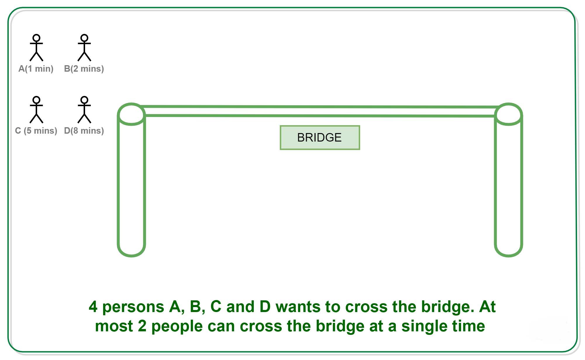
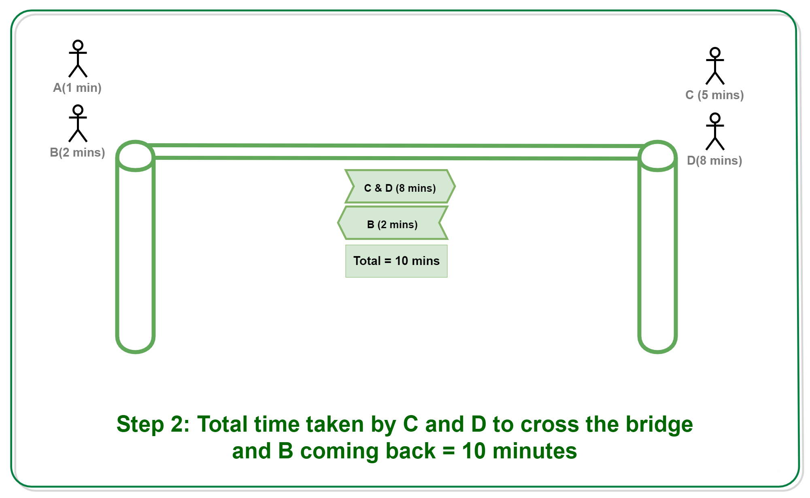
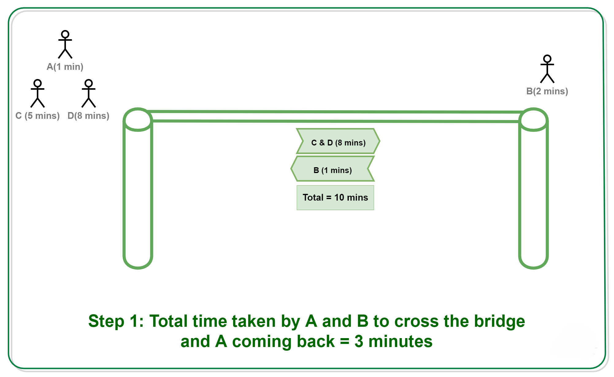
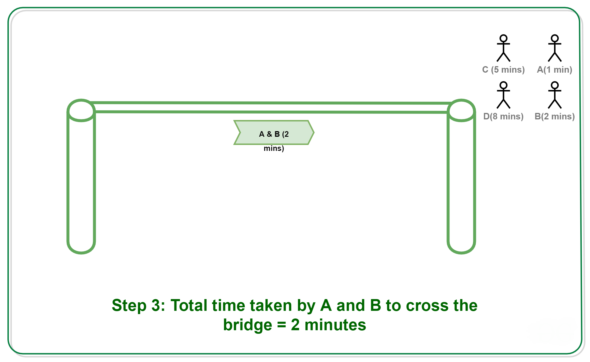

As per question.
Step 1.
Step 2.
Step 3.
Total time spent: 3 + 10 + 2 = 15 minutes.
To minimize the time:
The trick here is the persons with the fastest speeds only should come back (and that too only if there is a need to come back, as here we need to bring back the torch). A comes back in step-1 and B comes back in step-2. And, finally reduce the number of traveling back, like C, D does not come back.